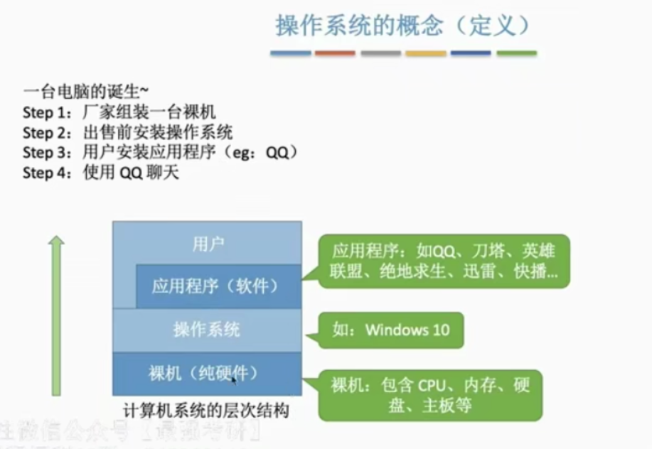

操作系统的概念

操作系统(Operating System, OS)是指控制和管理整个计算机系统的硬件和软件资源，并合理地组织和调度计算机的工作和资源的分配：以提供给用户和其他软件方便的接口和环境：它是计算机系统中最基本的系统软件。
操作系统是系统资源的管理者。
向上层提供方便易用的服务。
封装思想：操作系统把一些丑陋的硬件功能封装成简单易用的服务，使用户能更方便地使用计算机，用户无需关心底层硬件的原理，只需要对操作系统发出命令即可。
| 服务 | 解释 | 例子 |
|---|---|---|
| GUI 图形化用户接口(Graphical User Interface) | 用户可以使用形象的图形界面进行操作，而不再需要记忆复杂的命令、参数 | 在Windows操作系统中，删除一个文件只需要把文件“拖拽”到回收站即可 |
- 早期通过命令接口进行交互，命令接口分为两种。
联机命令接口 = 交互式命令接口
例子(Windows系统)：win键+R；输入cmd,回车进入命令解释器；输入命令
脱机命令接口 = 批处理命令接口
例子：搜索C盘中的*.bat文件，打开
把一系列的命令罗列，根据文件中的命令一条条执行（相当于用户一次提出一堆的请求，系统跟着做一堆。）
程序接口 ：可以在程序中进行系统调用来使用程序接口。普通用户不能直接使用程序接口，只能通过程序代码间接使用。
系统调用类似于函数调用，是应用程序请求操作系统服务的唯一方式。
最接近硬件的一层软件。
- 实现对硬件机器的拓展。
- 没有任何软件支持的计算机称为裸机。
- 通常把覆盖了软件的机器称为扩充机器，又称之虚拟机。
（Ctrl+Alt+Del）打开电脑任务管理器。
补充知识：执行一个程序前需要将该程序放在内存中，才能被CPU处理。
操作系统的特征
操作系统的四大特征是：并发，共享，虚拟，异步。其中并发和共享是两大最基本的特征，二者互为存在条件。
并发
并发：指两个或多个事件在同一时间间隔内发生。这些事件宏观上是同时发生的，但是微观上是交替发生的。
并行：指两个或多个事件在同一时刻同时发生。
操作系统的并发性指计算机系统中“同时”运行着多个程序，这些程序宏观上看是同时运行着的，而微观上看是交替运行的。
重要考点
单核CPU同一时刻只能执行一个程序，各个程序只能并发地执行
多核CPU同一时刻可以同时执行多个程序，多个程序可以并行地执行
共享
两种资源共享方式：互斥共享方式、同时共享方式。
互斥共享方式：系统中的某些资源，虽然可以提供给多个进程使用，但一个时间段内只允许一个进程访问该资源。
同时共享方式：系统中的某些资源，允许一个时间段内有多个进程“同时”对它们进行访问。
- 并发性指计算机系统中同时存在着多个运行着的程序。
- 共享性指系统中的资源可供内存中多个并发执行的进程共同使用。
虚拟
虚拟是指一个物理上的实体变为若干个逻辑上的对应物。物理实体（前者）是实际存在的，二逻辑上对应物（后者）是用户感受到的。
虚拟技术分为空分复用技术（如虚拟存储器技术）和时分复用技术（如虚拟处理器）。
显然，如果失去了并发性，则一个时间段内系统中只需运行一到程序，那么就失去了实现虚拟性的意义。因此没有并发性，就谈不上虚拟性。
异步
异步是指，再多道程序环境下，循序多个程序并发执行，但是由于资源有限，进程的执行不是一贯到底的，而是走走停停，以不可预知的速度向前推进，这就是进程的异步性。
OS的发展与分类
要重点关注和理解各操作系统主要想解决的是什么问题，各自的优缺点。
| 发展阶段 | 主要想解决的问题 | 主要优点 | 主要缺点 |
|---|---|---|---|
| 手工操作阶段 | 用户独占全机，人机速度矛盾导致资源利用率极低。 | ||
| 单道批处理系统 | 机器计算速度快，但是利用率不高 | 缓解了一定程度的人机速度矛盾，资源利用率有所提升 | 内存中仅能有一道程序运行，只有该程序运行结束之后才能调入下一道程序。CPU有大量的时间是在空闲等待I/O完成。资源利用率依然很低。 |
| 多道批处理系统 | 提高资源利用率 | 多道程序并发执行，共享计算机资源。资源利用率大幅提升，CPU和其他资源更能保持“忙碌”状态，系统吞吐量增大 | 用户相应时间长，没有人机交互功能 |
| 分时操作系统 | 解决用户无法操作系统 | 用户请求可以被及时响应，解决了人机交互问题 | 不能优先处理一些紧急任务。操作系统对各个用户/作业都是完全公平的，循环地为每个作业服务一个时间片，不区分任务紧急性。 |
| 实时操作系统 | 让计算机优先处理紧急任务 | 能够优先响应一些紧急任务，某些紧急任务不需时间片排队。 |
单道批处理系统
引入脱机输入/输出技术，并由监督程序负责控制作业的输入、输出。
多道批处理系统
每次网内存中读入多道程序。
操作系统正式诞生，用于支持多道程序并发运行。
分时操作系统法
计算机以时间片为单位轮流为各个用户/作业服务，各用户可通过终端与计算机进行交互。
实时操作系统
在实时操作系统的控制下，计算机系统接收到外部信号后及时进行处理，并且要在严格的时限内处理外事件。实时操作系统的主要特点是及时性和可靠性。
网络操作系统
伴随计算机网络的发展而诞生，能把网络中各个计算机有机地结合起来，实现数据传送等功能，实现网络中各种资源的共享（如文件共享）和各台计算机之间的通信。
分布式操作系统
主要特点是分布性和并行性。系统中的各台计算机地位相同，任何工作都可以分布在这些计算机上，由它们并行、协同完成这个任务。
操作系统的运行机制
基本概念：
“指令”指处理器（CPU）能识别、执行的最基本的命令。
应用程序VS内核程序
CPU有两种状态，“内核态”和“用户态”
处于内核态时，说明此时正在运行的是内核程序，此时可以执行特权指令
处于用户态时，说明此时正在运行的是应用程序，此时只能执行非特权指令
CPU中有一个寄存器程序状态字寄存器(PSW)，其中有个二进制位，1表示“内核态”，0表示“用户态”。
内核态=核心态=管态；用户态=目态
内核态、用户态的切换
内核态->用户态：执行一条特权指令——修改PSW的标志位为“用户态”，这个动作意味着操作系统将主动让出CPU使用权。
用户态->内核态：由“中断”引发，硬件自动完成变态过程，出发中断信号意味着操作系统将强行夺回CPU的使用权。
除了非法使用特权指令之外，还有很多事件会触发中断信号。一个共性是，但凡需要操作系统接入的地方，都会触发中断信号。

中断和异常
中断的作用
“中断”会使CPU由用户态变为内核态，使操作系统重新夺回对CPU的控制权。
CPU上会运行两种程序，一种是操作系统内核程序(整个系统的管理者)，一种是应用程序
中断的类型
内中断：与当前执行的指令有关，中断信号来源于CPU内部。
外中断：与当前执行的指令无关，中断信号来源于CPU外部。
- 时钟中断，时钟部件每个一个时间片会给CPU发送一个时钟中断信号。
- I/O中断，由输入/输出设备发出的中断信号
中断机制的基本原理
不同的中断信号，需要用不同的中断处理程序来处理。当CPU检测到中断信号后，会根据中断信号的类型去查询“中断向量表”，以此来找到相应的中断处理程序在内存中的存放位置。
中断处理程序一定是内核程序，需要运行在“内核态”。
系统调用
什么是系统调用
操作系统作为用户和计算机硬件之间的借口，需要向上提供一些简单易用的服务。主要包括命令接口和程序接口。其中程序接口由一组系统调用组成。
应用程序可以通过系统调用来请求获得操作系统内核的服务。
| 普通应用程序 | 可直接进行系统调用，也可使用库函数。有的库函数涉及系统调用，有的不涉及 |
|---|---|
| 编程语言 | 向上提供库函数。有时会将系统调用封装成库函数，以隐藏系统调用的一些细节，使程序员编程更加方便。 |
| 操作系统 | 向上提供系统调用，使上层程序能请求内核的服务。 |
什么功能要用到系统调用
应用程序通过系统调用请求操作系统的服务。而系统中的各种共享资源都是由操作系统内核统一掌管，因此凡是与共享资源有关的操作（如存储分配、I/O操作、文件管理等），都必须通过系统调用的方式向操作系统内核提出服务请求，由操作系统内核代为完成。这样可以保证系统的稳定性和安全性，放置用户进行非法操作。
系统调用过程
传递系统调用参数 -> 执行陷入指令（用户态） -> 执行响应内请求核程序处理系统调用（核心态）-> 返回执行应用程序
注意：
陷入指令是在用户态执行的，执行陷入指令之后立刻引发一个内中断，使CPU进入核心态。
发出系统调用请求是在用户态，而对系统调用的相应处理在核心态下进行。
陷入指令 = trap指令 = 访管指令
操作系统的体系结构
- 原语是一种特殊的程序，具有原子性。也就是说，这段程序的运行必须一气呵成，不可被“中断”。
内核是操作系统最基本、最核心的部分。
实现操作系统内核功能的那些程序就是内核程序。
注意：
操作系统内核需要运行在内核态
操作系统的非内核功能运行在用户态
| 名称 | 解释 | 优点 | 缺点 |
|---|---|---|---|
| 大内核 | 将操作系统的主要功能模块都作为系统内核，运行在核心态 | 高性能 | 内核代码庞大，结构混乱，难以维护 |
| 微内核 | 只把最基本的功能保留在内核 | 内核功能少，结构清晰，方便维护 | 需要频繁地在核心态和用户台之间切换，性能低 |
典型的大内核/宏内核/单内核 操作系统：Linux、UNIX
典型的微内核操作系统：Windows NT